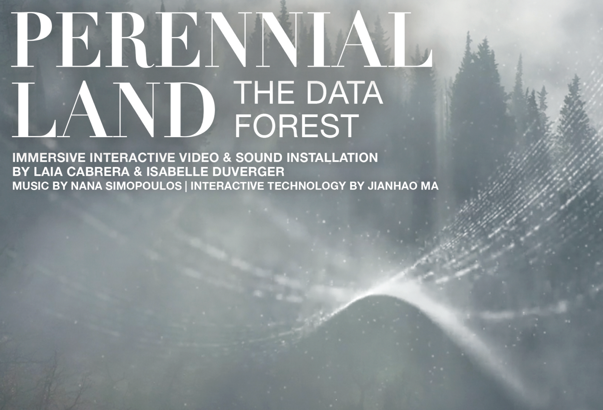
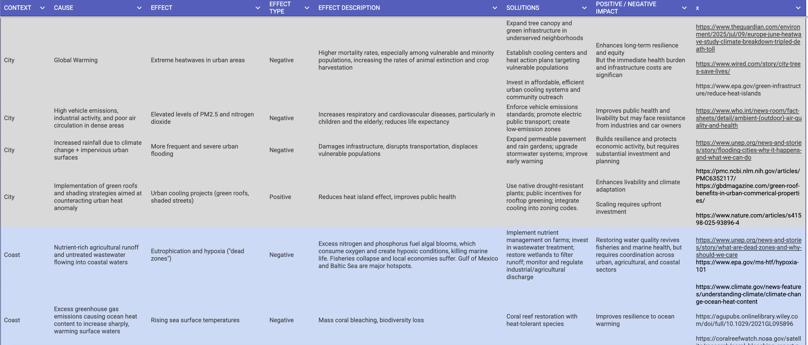
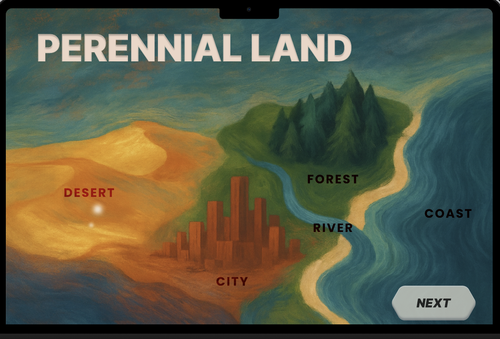
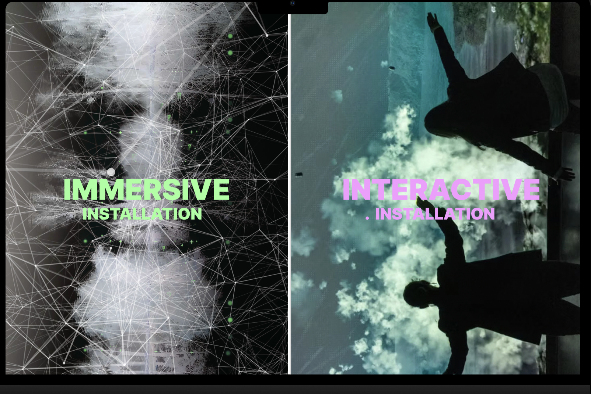

Featured Project from My Design Internship at LAIA CABRERA & CO.
Perennial Land
Perennial Land is an experiential installation centered on Climate Justice that immerses visitors in Earth's diverse landscapes while revealing the environmental consequences of human activity through interactive storytelling. During my internship, I contributed by conducting environmental research and designing interface concepts that transformed complex environmental information into engaging digital experiences.

Role
Design Intern
Duration
Summer 2025
Organization
LAIA CABRERA & CO.
The Challenge
Climate change is often communicated through fragmented reports and scientific literature, making it difficult for people to understand how environmental issues are interconnected across ecosystems.
The challenge was to support the creation of an interactive experience that translated complex environmental research into an intuitive journey, encouraging visitors to explore environmental issues through storytelling rather than static information.
Research & Content Organization
To support the environmental storytelling experience, I synthesized research from academic papers, environmental reports, and public datasets into a structured knowledge base. Environmental issues were organized into seven ecosystem categories including City, Coast, Global, Forest, Desert, Covered River, and City/Forest. Each record documented the causes, effects, ecological impacts, potential solutions, and supporting references. This structured framework guided the content organization and overall experience design of the final prototype.
7 Ecosystem Categories
City, Coast, Global, Forest, Desert, Covered River, and City/Forest.
5 Research Fields
Causes, Effects, Ecological Impacts, Potential Solutions, and Supporting References.
Research Sources
Academic papers, environmental reports, and public datasets synthesized into a unified research database.

The screenshot above shows a portion of the complete research database. Each record synthesized information from multiple reliable sources into a consistent format, allowing environmental issues across ecosystems to be organized, compared, and incorporated into the project's interactive storytelling experience.
Designing the Interactive Experience
Using the research framework, I designed interface concepts that transformed environmental information into an intuitive interactive experience. Visitors explore different ecosystems and discover the relationships between environmental challenges, ecological impacts, and potential solutions through a visual narrative.

The interface concept was designed to guide visitors through different environmental regions and present complex climate data in an intuitive, exploratory format.

The interface was developed as part of a larger immersive installation combining projection, sound, and interactive technology, allowing visitors to engage with environmental narratives through a multisensory experience.
Reflection
This internship strengthened my ability to transform complex environmental research into engaging digital experiences.
By organizing large amounts of environmental information into a structured framework before designing the interface, I gained valuable experience in information architecture, interaction design, and visual storytelling. The project reinforced how thoughtful design can make complex topics more accessible and meaningful for public audiences.
Learn More
Interested in learning more about the installation?
Visit Official Project →